Практичні курси · журнал «ДентАрт» 2013 №4 (73)
Ефект гало у ріжучому краї
INCISAL HALO
Гало — це оптичний феномен, відтворений напівпрозорими частками, які створюють кольорові або білі плями і дуги в освітленому тілі. У зубах ефект варіює від ефекту чистої опалесценції до її комбінацій з контропалесценцією. Фізично ефект не існує. Коли світло проходить крізь ріжучий край, довгі хвилі (червоний спектр) проходять крізь емаль, при цьому не відбиваючись як на поверхні, так і в глибоких краях, тоді як короткі хвилі (синій спектр) відбиваються, і в результаті для нашого погляду ріжучий край здається блакитним.
Білий ефект гало. Феномен опалесценції виникає в ріжучому краї, коли біле світло розділяється на два спектри: червоний (що поглинається) і синій (що відбивається). При відбитті призмами хвиль і червоного, і синього спектру виникає білий ефект. Зазвичай це відбувається по зовнішній грані ріжучого краю.
Жовтий або бурштиновий ефект гало. При певному розташуванні призм, коли поглинається тільки синій спектр світла, а червоний відбивається, видимим стає жовтий ефект гало, який називається феноменом контропалесценції. Оптично раціональні матеріали мають опалесцентні характеристики і здатні імітувати і незначний ефект блакитної опалесценції, і ефект гало. На жаль, на сьогодні стоматологічні матеріали не мають повною мірою властивостей відтворення цих феноменів настільки ж точно, як натуральна емаль, тому для створення ефекту гало необхідно використовувати невелику кількість певних опакових мас. Повний опис ефекту гало та інших характеристик детально викладено в книзі «Шари» («Layers»). Автор дякує докторові Девідові Клаффу за його унікальні знання.
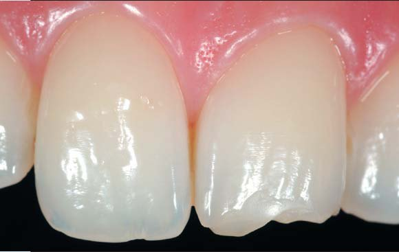
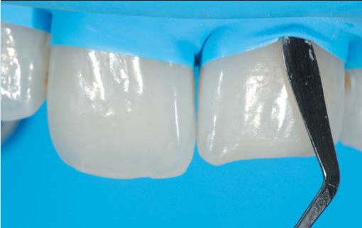
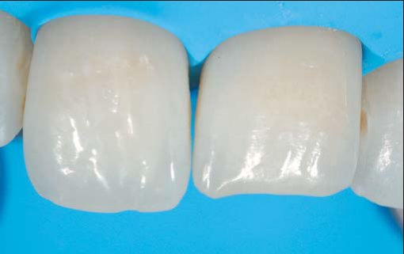
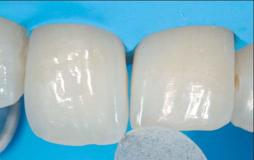
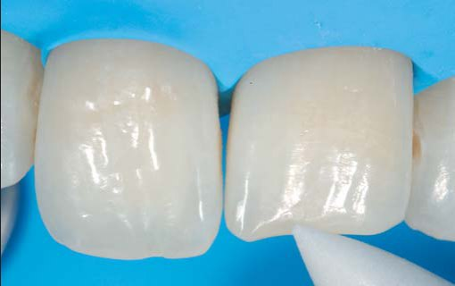
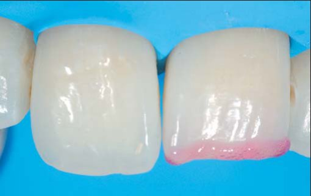
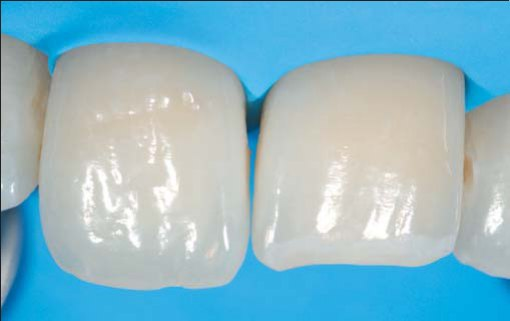
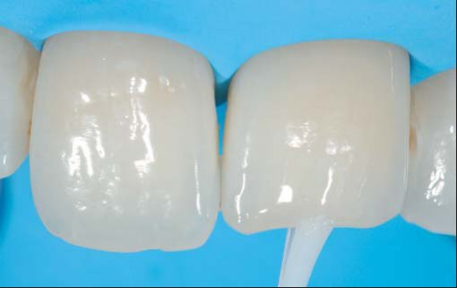
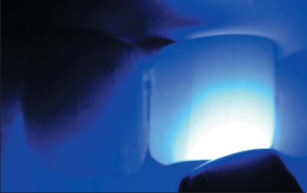
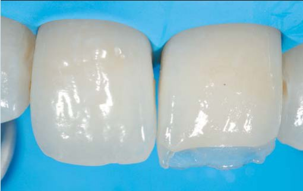
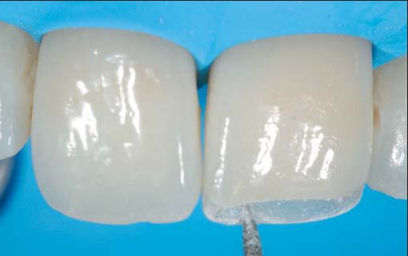
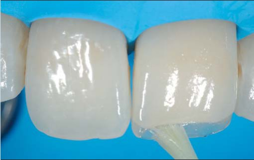
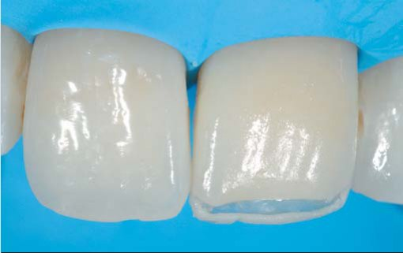
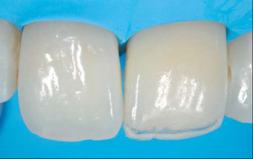
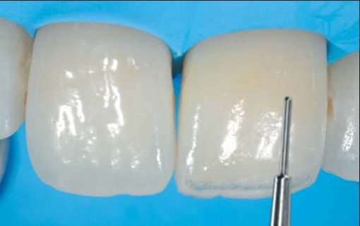
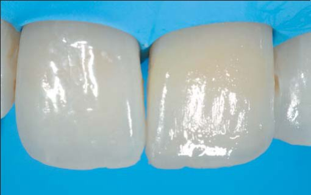
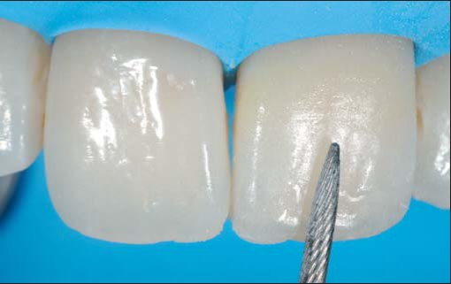
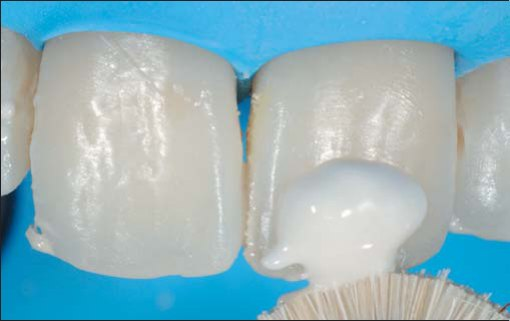
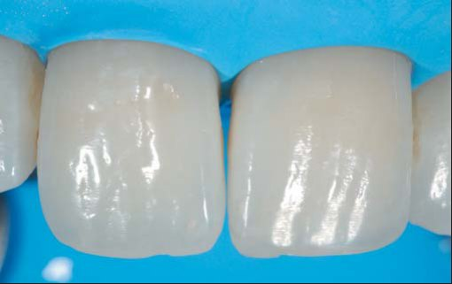
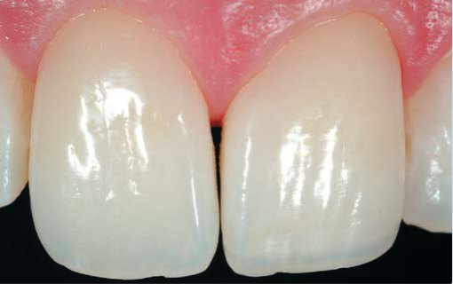
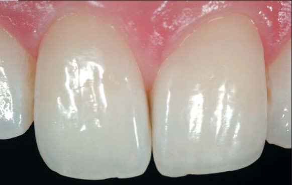
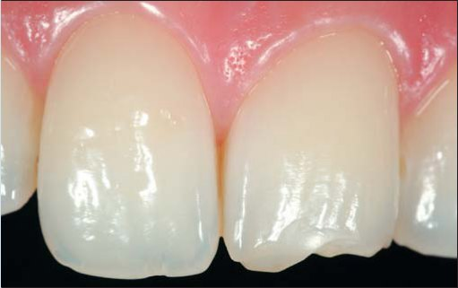
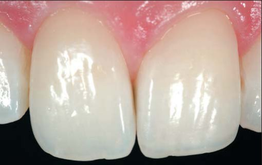
Висновок
На цьому клінічному прикладі продемонстровано, як простою двошаровою технікою можна досягти поліхроматичного результату за допомогою лише двох відтінків навіть у такій складній структурі, як створення ефекту гало в ріжучому краю.
Переклад Романа Савости.
Література
- Manauta J, Salat A. Layers. An atlas of composite resin stratification. Chapter 4 and 5, Quintessence Books, 2012.
- Salat A, Devoto W, Manauta J. Achieving a precise color chart with common computer software for excellence in anterior composite restorations. Eur J Esthet Dent 2011;6:280–296.
- Devoto W. Clinical procedure for producing aesthetic stratified composite resin restorations. Pract Proced Aesthet Dent 2002; 14:541–543.
- Devoto W, Pansecchi D. Composite restorations in the anterior sector: Clinical and aesthetic performances. Pract Proced Aesthet Dent 2007;19:465–470.
- Duarte S Jr. Opalescence: The key to natural esthetics. Quintessence Dent Technol 2007;30:7–20.
- Duarte S Jr, Perdigaа̃o J, Lopes M. Composite resin restorations — Natural aesthetics and dynamics of light. Pract Proced Aesthet Dent 2003;15:657–664.
- Fahl N Jr. A polychromatic composite layering approach for solving a complex Class IV/direct veneer-diastema combination. 1. Pract Proced Aesthet Dent 2006;18:641–645.
- Lee YK, Lu H, Powers JM. Measurement of opalescence of resin composites. Dent Mater 2005;21:1068–1074.
- Primus CM, Chu CC, Shelby JE, Buldrini E, Heckle CE. Opalescence of dental porcelain enamels. Quintessence Int 2002;33:439–449.
- Terry DA, Geller W, Tric O, Anderson MJ, Tourville M, Kobashigawa A. Anatomical form defines color: Function, form and aesthetics. Pract Proced Aesthet Dent 2002;14:59–67.
- Vanini L, Mangani F. Determination and communication of color using the five color dimensions of teeth. Pract Proced Aesthet Dent 2001;13:19–26.
- Vanini L, Mangani F, Klimovskaia O. Conservative Restoration of Anterior Teeth. Viterbo, Italy: Acme, 2005.
See more at: http://www.styleitaliano.org/incisal-